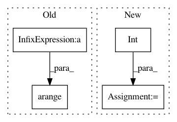

caf7f0ae508bd8a5212d0ed5a928ad667c57efd8,data_utils.py,,generator_from_raw_dataset,#Any#Any#Any#Any#Any#Any#Any#,328
Before Change
if phase == "train":
chorale_indices = np.arange(int(len(X) * percentage_train))
if phase == "test":
chorale_indices = np.arange(int(len(X) * percentage_train), len(X))
if phase == "all":
chorale_indices = np.arange(int(len(X)))
left_features = []
After Change
num_voices = len(voice_ids)
// Set chorale_indices
total_size = len(X)
training_size = int(round(total_size * percentage_train))
if phase == "train":
chorale_indices = np.arange(training_size)
if phase == "test":
chorale_indices = np.arange(training_size, total_size)
In pattern: SUPERPATTERN
Frequency: 3
Non-data size: 4
Instances
Project Name: Ghadjeres/DeepBach
Commit Name: caf7f0ae508bd8a5212d0ed5a928ad667c57efd8
Time: 2017-07-12
Author: bohumir.zamecnik@gmail.com
File Name: data_utils.py
Class Name:
Method Name: generator_from_raw_dataset
Project Name: YerevaNN/mimic3-benchmarks
Commit Name: 1760b8db5de339e12682f79111886b3b7e30d73c
Time: 2018-03-26
Author: harhro@gmail.com
File Name: scripts/create_length_of_stay.py
Class Name:
Method Name: process_partition
Project Name: librosa/librosa
Commit Name: 4d78e7c936be168db70c65276915688a131ef193
Time: 2015-02-17
Author: brian.mcfee@nyu.edu
File Name: librosa/display.py
Class Name:
Method Name: __axis_chroma